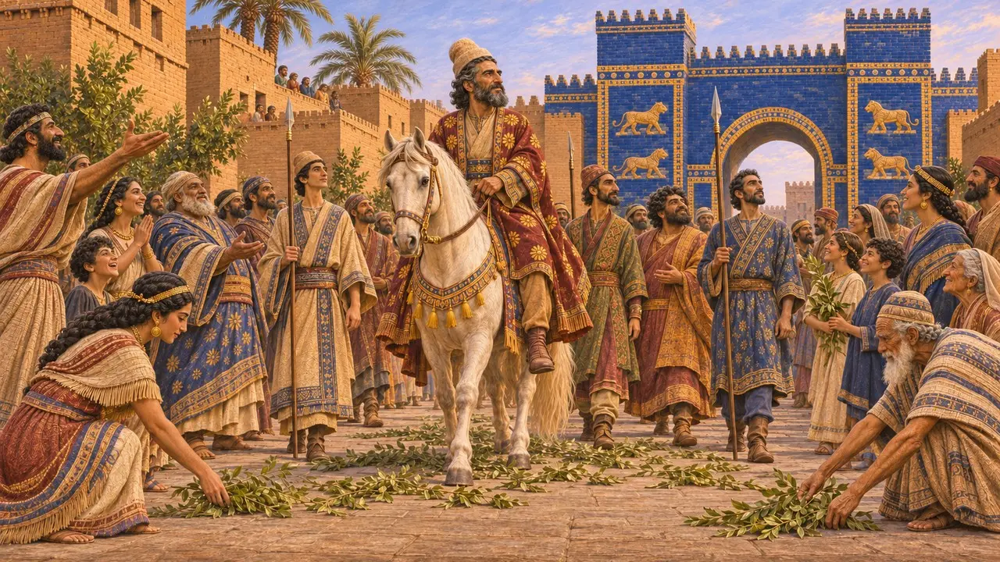
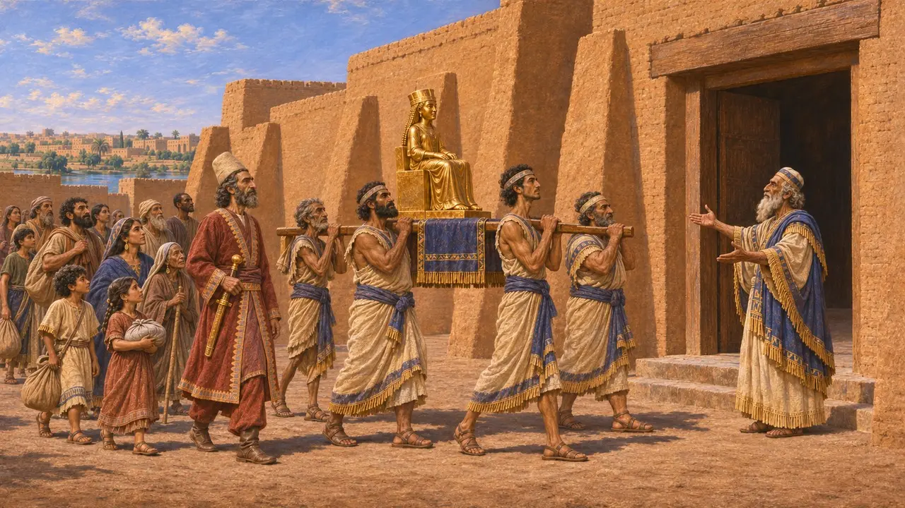
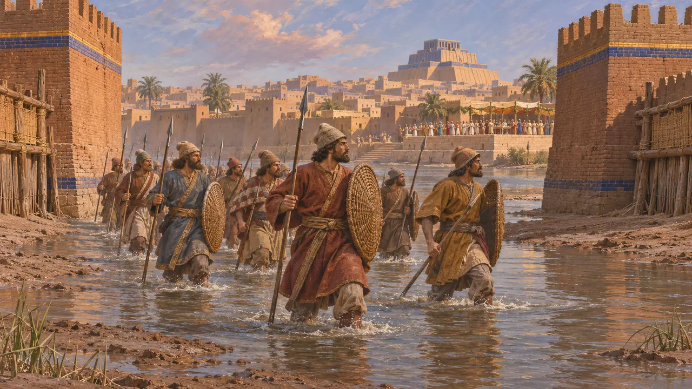
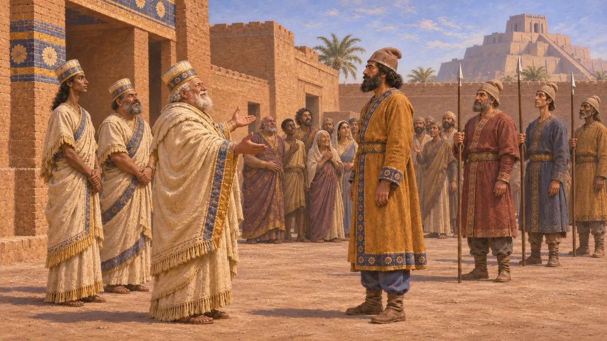
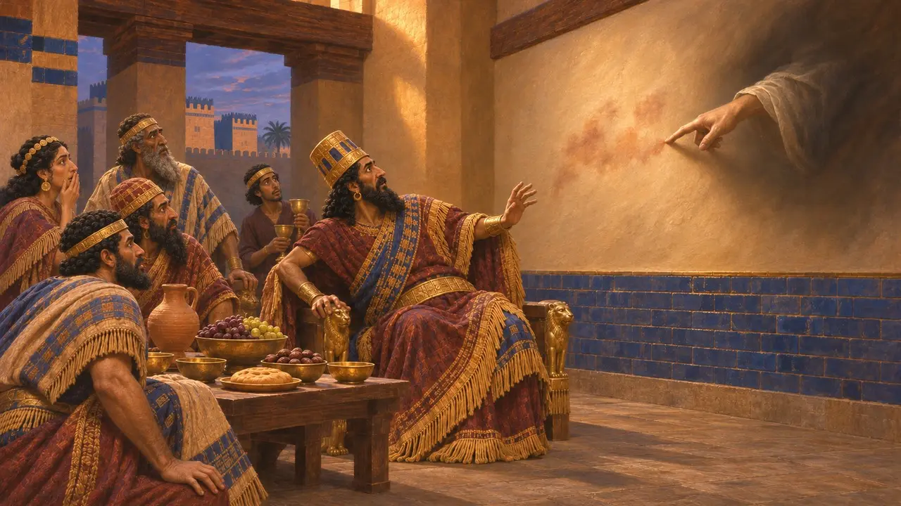

Encyclopédie › Batailles et événements

La chute de Babylone
La prise du royaume babylonien par Cyrus à Opis et à Babylone, 539 av. J.-C.
Dans le jeu : Niveau 1 : Le Tombeau du fondateur
À l'automne 539 av. J.-C., Cyrus vainquit l'armée du roi babylonien Nabonide à Opis, sur le Tigre. Peu après, ses troupes entrèrent dans Babylone sans combat. Cette conquête donna à Cyrus le riche royaume de Babylonie, avec ses temples, ses archives, ses champs irrigués et ses provinces occidentales jusqu'à la Méditerranée, et il le gouverna en roi de Babylone.
Dans le jeu : Le jeu marque la chute par une entrée de la Chronique tandis que l'orge babylonienne parvient à Pasargades. Il rapproche le Cylindre d'Esdras 1 sur le retour des exilés, bien que le Cylindre ne nomme jamais les Judéens.

Ce que consigne la Chronique de Nabonide
Dans les sourcesSelon la chronique, au mois de Tashritu, vers octobre 539 av. J.-C., Cyrus affronta l'armée d'Akkad à Opis, la mit en déroute, prit du butin et tua des hommes. Sippar tomba sans combat le 14, et le 16, Ugbaru, gouverneur du Gutium, entra dans Babylone avec l'armée de Cyrus, lui aussi sans combat. Nabonide, qui avait pris la fuite, y fut capturé plus tard. Cyrus lui-même y entra le 3 Arahsamnu, tandis que l'on étendait devant lui des rameaux verts et que l'on proclamait la paix dans la ville.
Nabonidus Chronicle (ABC 7)

La version de Cyrus lui-même sur le cylindre
Dans les sourcesLe cylindre d'argile a été découvert à Babylone en 1879 et se trouve aujourd'hui au British Museum. Il a été rédigé en cunéiforme babylonien au nom de Cyrus. Il affirme que Mardouk, irrité par la négligence de Nabonide envers son culte, a choisi Cyrus et l'a laissé entrer dans Babylone sans combat. Il prétend que Cyrus a rendu les dieux à leurs sanctuaires dans des villes situées au-delà du Tigre, comme Assur, Suse et Dêr, et qu'il a ramené leurs habitants dans leurs foyers.
Cyrus Cylinder (BM 90920)

Hérodote et Xénophon sur l'entrée par le fleuve
Récit antiqueHérodote dit que Cyrus vainquit les Babyloniens en bataille devant la ville, puis détourna l'Euphrate vers un bassin afin que ses hommes puissent entrer en marchant dans le lit du fleuve. Il ajoute que la ville était si vaste que les habitants du centre continuèrent à célébrer une fête, ignorant qu'elle était tombée. La Cyropédie de Xénophon, œuvre plus morale qu'historique, raconte une histoire semblable où le roi est tué, alors que la Chronique dit que Nabonide fut pris vivant.
Herodotus 1.188-191; Xenophon, Cyropaedia 7.5

Libération ou propagande
ContestéLe Cylindre et le Récit en vers de Nabonide présentent Nabonide comme un impie et Cyrus comme un libérateur. La plupart des historiens y voient deux textes composés après la conquête, probablement par des prêtres babyloniens, pour la justifier. Le récit de la Chronique sur les combats et le pillage d'Opis montre qu'elle ne fut pas entièrement pacifique, et il ne mentionne ni siège ni détournement du fleuve. Le Cylindre ne nomme jamais les Judéens ; leur retour repose sur Esdras 1, dont le décret aurait été remanié plus tard selon certains savants.
A. Kuhrt, The Persian Empire, 2007; P. Briant, From Cyrus to Alexander, 2002

L'écriture sur le mur
Légende tardiveLe Livre de Daniel, écrit des siècles plus tard, place la chute la nuit d'un festin donné par Balthazar. Une main écrivit sur le mur du palais, et le roi fut tué cette nuit-là. Balthazar a bel et bien existé : il était le fils de Nabonide et avait gouverné Babylone pendant le long séjour de son père à Téma, mais son sort en 539 av. J.-C. est inconnu. Daniel en fait le fils de Nabuchodonosor et donne le royaume à un Darius le Mède par ailleurs inconnu.
Daniel 5
Sources
- Nabonidus Chronicle (ABC 7), in A. K. Grayson, Assyrian and Babylonian Chronicles, 1975
- Cyrus Cylinder (BM 90920)
- Herodotus 1.188-191
- A. Kuhrt, The Persian Empire, 2007
- P. Briant, From Cyrus to Alexander, 2002
- Xenophon, Cyropaedia 7.5; Daniel 5; Ezra 1